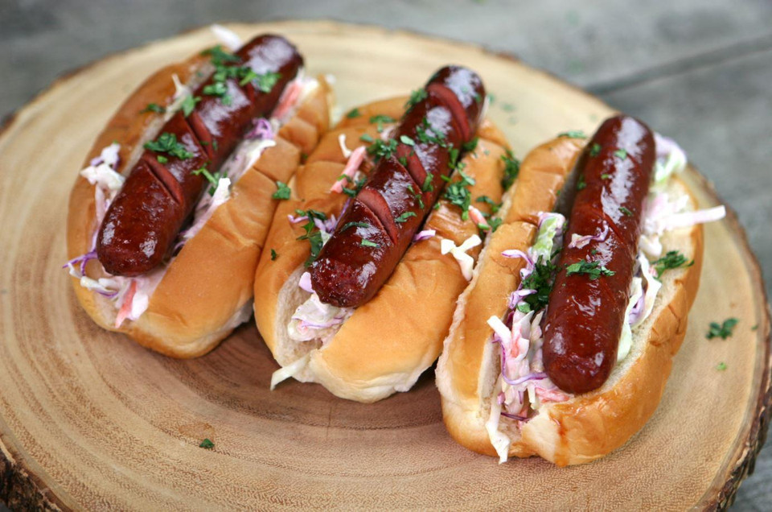

Hot Link

Ingredients
- Hotlink sausage
- Hot dog buns
- Jalapenos
- Mustard
- Ketchup
- Cross-score two sides of hot link.
- Slice jalapenos and place on griddle with butter
- Cook hotlinks until charred on all sides.
- Heat buns on griddle with butter
- Assemble hotlink and bun and garnish with jalapenos, mustard and ketchup. Enjoy!